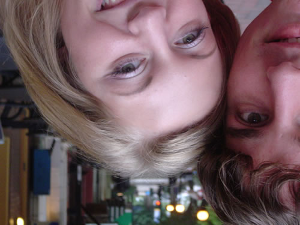

Tiffany is someone I am very lucky to have known. Unlike most of the friends on my page, I did not meet her at UGA and I did not matriculate with her in high school. Tiffany came to me during a very difficult time in my life. Sometimes called "The Darkness," I also refer to it with its more recognized description, my employment at Dial America. If I did not have Tiffany, I would not have survived that hell hole!
We met when we were training on the Trilegiant program (an awful aggressive selling thing I am glad to have purged virtually all memory of). We managed to get a few weekend shifts together, and while we were not taking calls, we talked to eachother very often. At the time, we were both involved in relationships, and she was one of only a handful of people I have had to admit to that I'm gay (thankfully most people assume, but with special persons like Tiffany, I let them know). We bonded over relationship things, mutual friends, and shared Dial America-related misery. When my relationship ended, Tiffany was a good friend and helped me in venting some frustrations.

Though I didn't stay at Dial America, my frienship with Tiffany has endured. Though we have rarely spent much time outside of 279 Williams St., the time we did spend was meaningful and we have kept in touch through e-mail. Oh, and if you consider how often we keep "in touch" subconciously, you'd probably have to consider this a "More-than-Friends Page."
Tiffany is my friend because she's a beautiful, kind person with a good heart and a great personality. She has a way of making a gloomy situation bearable and she kept me coming back to work even when it had me almost depressed to tears. I was so lucky to have a friend like Tiffany and I hope I will always continue to have that joy.
And, baby, if I don't see you that often, you know I'll see you in my dreams :-*
Tiffany is my friend because she's a beautiful, kind person with a good heart and a great personality. She has a way of making a gloomy situation bearable and she kept me coming back to work even when it had me almost depressed to tears. I was so lucky to have a friend like Tiffany and I hope I will always continue to have that joy.
And, baby, if I don't see you that often, you know I'll see you in my dreams :-*

Oh, I only wish this song worked for me and Tiffany. Why did God make me such a lousy faggot with several beautiful and attractive female friends?
Bad Boyfriend
I've got a fever
Come check it and see
There's something burning and rolling in me
We may not last but we'll have fun till it ends
C'mon baby be my bad boyfriend
I wanna hear you call out my name
I wanna see you burn up in flames
Keep you on ice so I can show all my friends
C'mon baby be my bad boyfriend
So ripe so sweet come suck it and see
But watch out Daddy I sting like a bee
I know some tricks I swear will give you the bends
C'mon baby be my bad boyfriend
My fever's rising you ran into luck
Say what sugar
You wanna get what?
I'm wanna give you one hundred and ten
C'mon baby be my bad boyfriend
It's wild the way you tease me
It's wild the way you free me
It's wild the way you reach me
Wrapped me up in your wire from the start
You've got the women waiting in line
I'm not asking you to make up your mind
But I can make you happy at least now and then
I've got something special for my bad boyfriend
If you can't love me honey go on just pretend
I've saved something special for the very end
If you can't love me honey go on just pretend
C'mon baby be my bad boyfriend